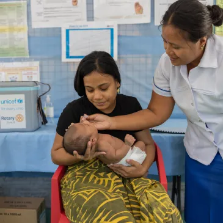

Discover the advancements in healthcare facilities and services across Cebu.
Healthcare in Cebu has seen notable improvements with the establishment of new healthcare centers, upgrades in public hospitals, and the introduction of more accessible medical services for the underserved areas of the province.
The establishment of new medical facilities in rural Cebu will improve healthcare access for underserved communities.
facilities are essential for providing timely medical care and addressing health concerns in remote areas of the province.
Upgrades in Cebu Provincial Hospital aim to improve healthcare services, ensuring that patients receive the best possible care.
These enhancements will increase the hospital's capacity to serve a growing population, providing modern medical facilities and technologies.
Free health check-up programs for marginalized communities provide essential healthcare services to those who may not have access to regular medical attention.
programs help detect and prevent health issues early, improving the overall well-being of underserved populations.
Building more healthcare centers in remote areas ensures that residents have access to essential medical services without long travel times.
These centers play a crucial role in improving public health and providing timely care to underserved communities.
Improving maternal and child healthcare services ensures better outcomes for mothers and children, reducing risks during pregnancy and childbirth.
Enhanced care and support in these services contribute to healthier families and communities, promoting long-term well-being.
Expanding mental health awareness and treatment programs helps reduce stigma and encourages individuals to seek the help they need.
These programs are essential for providing accessible mental health care, supporting overall well-being, and improving quality of life for those affected by mental health issues.